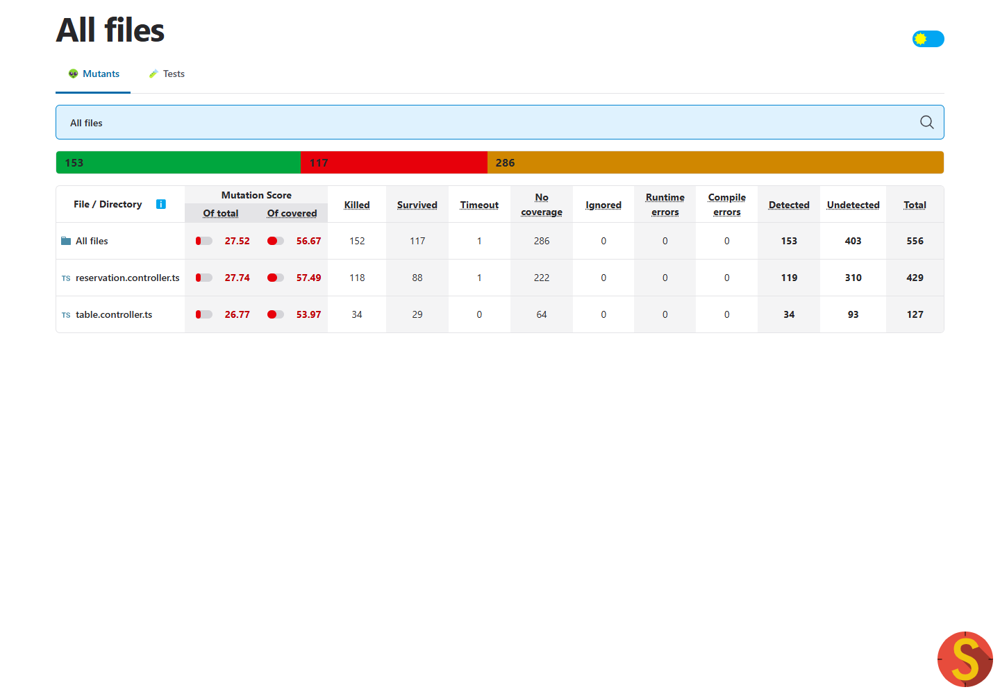

Member 1: Static analysis, white-box testing, mutation testing, CI quality gates, risks and exit criteria
| Criterion | Actual evidence | Status |
|---|---|---|
| Reproducible tooling | Vitest 4.0.18, coverage-v8 4.0.18, Stryker 9.1.1, pinned SonarQube 25.11.0.114957 image | Partial pass |
| White-box suite | 20/20 tests passed | Pass |
| Coverage target | 50.78% statements; 46.46% branches; assignment target 100% | Fail |
| Mutation baseline | 556 mutants; 152 killed; 117 survived; 286 no coverage; 1 timeout; score 27.52% | Fail |
| SonarQube metrics | Service reached UP, but Docker's internal store became read-only before scanning | Blocked |
| CI and PR evidence | Existing CI inspected; Member 1 required gates and passing/failing PR demonstration not complete | Pending |
| ID | Rule | Technique | Evidence |
|---|---|---|---|
| M1-BR-01 | Party size is an integer from 1 through 50. | Equivalence partitions and boundaries 0, 1, 50, 51 | Rejected cases assert no write; accepted boundaries assert Prisma payload. |
| M1-BR-02 | Creation requires a customer principal and active location. | MCC and MC/DC | Unauthenticated, staff, missing location, inactive location, and valid customer rows. |
| M1-BR-03 | Partial update changes supplied fields only and supports explicit null. | Data-flow and branch testing | Invalid, missing record, omitted fields, null fields, and all supplied fields. |
| M1-BR-04 | Availability needs an active sufficiently large unreserved table. | Compound condition and conflict partitions | Required query, default party size, fully occupied and available slots. |
The graph models updateReservation. Assignment nodes on each true optional-field edge are counted even though the compact visual groups the branch labels.
Location rejection is !location || !location.isActive. Let A = location exists and B = active.
| Case | A exists | B active | B executes? | Reject | Test |
|---|---|---|---|---|---|
| MCC-01 | F | N/A | No (short-circuit) | T | Missing location |
| MCC-02 | T | F | Yes | T | Inactive location |
| MCC-03 | T | T | Yes | F | Accepted boundary cases |
MC/DC pairs: A uses MCC-01 versus MCC-03, acknowledging B is structurally unavailable when A is false. B uses MCC-02 versus MCC-03. B is masked in MCC-01 by JavaScript short-circuiting.
npm run coverage:member1 executed 20 tests: 20 passed, 0 failed.
Figure 1. Browser-rendered Vitest HTML coverage report generated from the Member 1 suite.

Figure 2. Browser-rendered Stryker HTML report from the genuine pre-strengthening baseline.
| Class | Representative surviving behavior | Reason | Required action |
|---|---|---|---|
| Weak assertion | Response object removed or success boolean flipped | Some rejection tests assert status/write prevention but not the entire body | Add exact response assertions |
| Missing test | Prisma where object removed | Several tests do not assert lookup/update query identity | Assert exact Prisma call payload |
| Missing test | Rename condition forced false | Changed-name unique and duplicate rows are not both implemented | Add both feasible MCC rows |
| Missing test | isActive default true changed to false | No successful create-table test omits isActive | Assert persisted default |
| Equivalent candidate | Mutation in output field not observable under current mocked return | Production behavior may be determined by mocked Prisma response | Confirm invariant before classifying equivalent |
The raw report contains 117 genuine survivors, exceeding the required 15 available for detailed classification. Final per-mutant IDs and rerun outcomes remain incomplete and must not be claimed as finished.
sonarqube:25.11.0.114957-community, digest sha256:48dd0e....UP at http://localhost:9000.sonar-project.properties and points to the exact Member 1 LCOV report.| Highest risk | L×I | Mitigation | Linked criterion |
|---|---|---|---|
| Double booking because creation does not enforce conflicts | 4×5 = 20 Critical | Transactional conflict check and concurrency tests | EC-01 coverage |
| Invalid table assignment capacity/location/activity | 4×5 = 20 Critical | Assignment validation and MCC/boundary tests | EC-01, EC-02 |
| Status lifecycle is not enforced | 4×4 = 16 High | Transition map and state tests | EC-01 |
| Coverage/mutation scope exceeds schedule | 4×4 = 16 High | Inventory and prioritize critical rules | EC-01, EC-02 |
| ID | Target | Actual | Status |
|---|---|---|---|
| EC-01 | 100% statements and branches | 50.78% / 46.46% | Fail |
| EC-02 | Threshold met; no unclassified critical survivors | 27.52%; 117 survivors | Fail |
| EC-03 | Sonar quality gate with imported LCOV | Docker blocker | Pending |
| EC-04 | Required GitHub checks and blocked regression PR | Not demonstrated | Pending |
The Member 1 foundation is reproducible and the evidence is genuine, but the rubric statement is not yet fully satisfied. White-box tests and baseline mutation evidence exist; measured coverage and mutation readiness fail; Sonar metrics/screenshots and CI passing/failing PR proof remain blocked or pending. Release must remain blocked until the exit criteria pass.